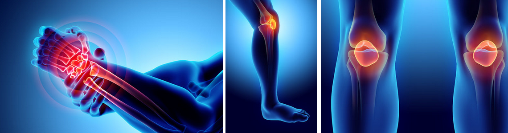

Сьогодні ми завітали до відомого ревматолога Тараса Олеговича Котляра – спеціаліста, який змінив підхід до лікування суглобових захворювань. Його унікальна розробка – ФЛЕКСОХІЛ – уже допомогла тисячам людей повернутися до активного життя без болю. Ми вирішили дізнатися, як з’явився цей препарат, чому він відрізняється від інших засобів і як саме працює.
— Доброго дня, Тарасе Олеговичу! Дякую, що погодилися на інтерв’ю. Давайте почнемо з того, щоб ви представилися та розповіли трохи про себе.
— Доброго дня! Я ревматолог із понад 20-річним досвідом. У своїй практиці я бачив безліч випадків захворювань суглобів – артритів, артрозів, остеохондрозу. Моя мета – не просто тимчасово зняти біль, а знайти справжнє рішення, яке дозволить пацієнтам повернути свободу руху без операцій та дорогих процедур.
— Як ви прийшли до створення ФЛЕКСОХІЛУ? Що стало поштовхом до розробки?
— Усе почалося з моєї мами. Вона довгий час страждала від болю в колінах і спині. Ми пробували різні препарати, мазі, ін’єкції, але все це давало лише тимчасовий ефект. Я почав вивчати проблему глибше і експериментував з натуральними компонентами, які могли б не лише зняти біль, а й відновити суглобову тканину. Через деякий час я помітив, що одне з моїх поєднань дало приголомшливий ефект – мама почала рухатися без болю, перестала прокидатися ночами від дискомфорту.
Це стало переломним моментом – я зрозумів, що знайшов щось справді ефективне. Далі були роки вдосконалення формули, клінічні дослідження та тестування. Так з’явився ФЛЕКСОХІЛ – препарат, який працює не тільки як знеболювальний, а й відновлює суглоби зсередини.
— Що саме робить ФЛЕКСОХІЛ унікальним у порівнянні з іншими засобами від болю в суглобах?
— Більшість препаратів на ринку просто маскують проблему, тобто знімають біль на деякий час. Але як тільки ви перестаєте їх приймати – біль повертається, а суглоби продовжують руйнуватися.
ФЛЕКСОХІЛ працює зовсім інакше:
✅ Живить та відновлює хрящову тканину завдяки високій концентрації низькомолекулярної та високомолекулярної гіалуронової кислоти.
✅ Прибирає біль і запалення завдяки натуральним анестетикам.
✅ Покращує рухливість суглобів, оскільки запускає природні процеси регенерації.
Це не просто знеболення – це повноцінне відновлення суглобів.
— ФЛЕКСОХІЛ підходить тільки для людей похилого віку чи молодим теж можна його приймати?
— Він підходить абсолютно всім, хто має проблеми із суглобами! Молоді люди часто стикаються з болем через високі навантаження, спорт або сидячий спосіб життя. Якщо не звертати на це увагу, з роками суглоби будуть зношуватися. ФЛЕКСОХІЛ допомагає зміцнити їх і запобігти майбутнім проблемам.
— Як швидко з’являється ефект?
— Усе залежить від стадії захворювання. Багато пацієнтів відчувають полегшення вже через кілька днів прийому. Але для повного відновлення суглобів рекомендовано курс від 1 до 3 місяців.
— Чи є протипоказання?
— ФЛЕКСОХІЛ створений із натуральних компонентів, тому практично не має протипоказань. Його можна приймати навіть людям із хронічними захворюваннями. Але, звичайно, якщо у вас є індивідуальна непереносимість, перед прийомом варто проконсультуватися з лікарем.
— Де можна придбати ФЛЕКСОХІЛ?
— Його можна замовити тільки на офіційному сайті. Це гарантує оригінальність та захист від підробок.
📢 Зараз діє спеціальна пропозиція!
Залиште заявку сьогодні – і отримайте препарат БЕЗКОШТОВНО
📌 Не відкладайте здоров’я на потім – замовляйте ФЛЕКСОХІЛ прямо зараз!
Коментарі
Якщо ви довіряєте Тарасу Олеговичу натисніть лайк!
Лікував свою маму у цього спеціаліста. Дуже допоміг, але за консультацію довелось заплатити дуже багато. Тепер з'явилась можливість безкоштовно отримати препарат для лікування та профілактики суглобів в якому я на 100% впевнений. Дякую Вам, Тарас Олегович!
Я студент Київського меду, та Тарас Олегович приїздив до нас з лекцією. Мабудь, це найбільш професійна людина як я бачив. В аудиторії була мертва тиша, тому що всі з захопленням слухали Тараса Олеговича. Я впевнений ця людина знає що робить!
Підтверджую! Лікар Котляр справжній професіонал. Була у нього на прийомі в Інституті суглобів, провів якісне лікування. З радістю спробую його розробку!
Знаю Тараса особисто, він мій сусід по городу. На городі поперек почав дуже сильно боліти, а Тарас Олегович за допоми одних тільки вправ прибрав болі буквально за пів години. Також використовувала Флексохіл за його рекомендацією. Дуже задоволена. Приходь до мене на пиріжки!
Тарас Олегович – справжній спеціаліст! Допоміг моїй мамі, коли всі інші лікарі не змогли нічого зробити. Рекомендую його послуги!
Тарас Олегович – чудовий фахівець! Після лікування у нього я відчула значне полегшення. Тепер завжди звертаюсь лише до нього!
Тарас Олегович дуже допоміг моєму батькові після операції. Завдяки його рекомендаціям швидше відновився. Дуже вдячні за допомогу!
Хочу подякувати Тарасу Олеговичу за професіоналізм! Він провів ефективне лікування, і мої болі в суглобах зникли. Рекомендую всім!
Проходив лікування у Тараса Олеговича. Дуже задоволений результатами! Болі в суглобах зменшились на 90%. Дякую за допомогу!
Неодноразово звертався до Тараса Олеговича, і завжди отримував тільки найкращі результати. Дуже задоволений його методами лікування!
Хочу подякувати Тарасу Олеговичу за те, що знову повернув мене до нормального життя. Його лікування дійсно працює!
Тарас Олегович – це справжній професіонал! Після консультації у нього я зрозумів, як важливо правильно підходити до лікування суглобів. Дякую за підтримку!
Тарас Олегович допоміг мені уникнути операції. Його методи лікування справді ефективні. Дуже вдячна за допомогу!
Пройшла курс лікування у Тараса Олеговича. Я дуже задоволена результатами, біль у суглобах значно зменшився!